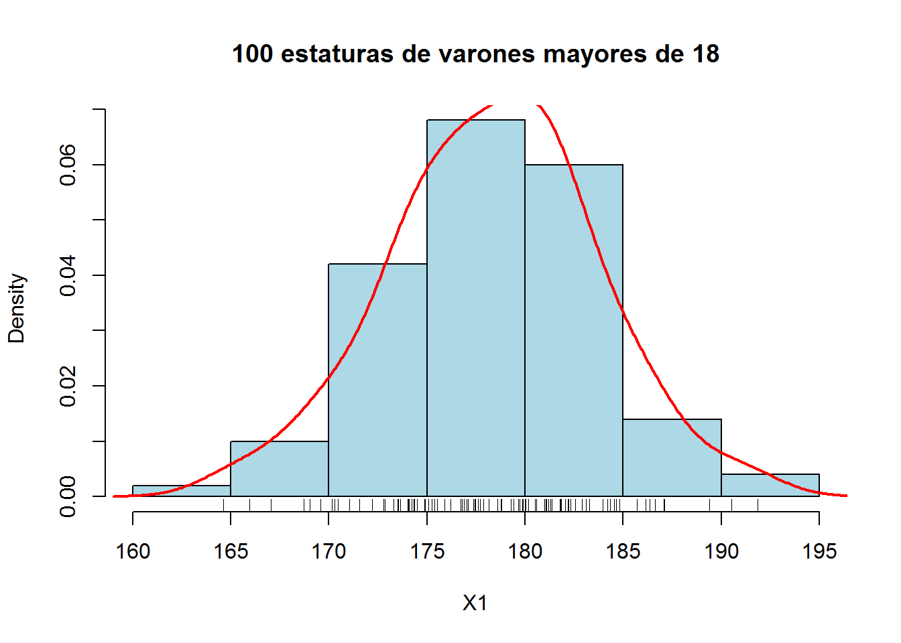

INFERENCIA ESTADÍSTICA
Los dos objetivos principales de la Estadística son:Describir una
muestra o subconjunto de una población (Estadística descriptiva),
Extraer de la muestra información acerca de la población, La Inferencia
Estadística se utiliza cuando no se puede observar toda la población
(principalmente por motivos económicos). A partir de la muestra, se
intenta obtener información que sirva para caracterizar toda la
población, Hay varios procedimientos para obtener una muestra de una
población. El objetivo de estos procedimientos es que la muestra
represente lo mejor posible a dicha población, Nosotros nos centraremos
en el conocido como muestreo aleatorio simple.

PARÁMETRO ESTADÍSTICO
el parámetro estadístico es un valor, un número, que resume y permite
interpretar los datos extraídos en el estudio de una muestra
estadística. Imaginemos que hablamos de una población determinada que
queremos analizar. En este caso, el parámetro estadístico podría ser la
edad media de la población en cuestión.
También, es conveniente señalar que a los parámetros estadísticos
también se les conoce como estadísticos descriptivos.
El cálculo de este parámetro, está definido mediante una fórmula
aritmética. En el caso de la población, la media presenta una fórmula
que se utiliza para calcular y extraer dicho parámetro.

ESTADÍGRAFOS
Los números son construidos considerando toda la información que
contiene dicha muestra, es decir, se consideran todos los datos que han
sido recolectados. Pueden construirse estadígrafos para distintos fines,
sin embargo, estudiaremos tres tipos de ellos dado su amplio uso en la
estadística descriptiva: estadígrafos de orden, de tendencia central y
de variabilidad.
Cada vez que la muestra de datos, medidos al menos en escala ordinal, ha
sido ordenada, es posible asignar a cada dato una ubicación (ranking)
que indica su posición, en dirección ascendente, respecto al resto de la
muestra. Esta ubicación se denota por un subíndice comprendido entre
paréntesis. Por ejemplo, si se tienen los datos 12, 7, 15 y 13, al
ordenarlos se tiene 7, 12, 13 y 15, es decir el primer dato de la
ordenación es 7, el segundo 12, etc. Este hecho se expresa
simbólicamente como sigue:
X(1)=7, X(2)=12, X(3)=13 y X(4)=15
Con esta notación, si se cuenta con n datos, el menor valor observado,
que se llama el mínimo, será denotado por X(1) y el mayor valor
observado, que se llama máximo, será denotado por X(n). La muestra se
puede visualizar sobre un eje ordenado, Supongamos que tenemos una
función de x, f(x), para encontrar una expresión que nos discretice la
derivada segunda de la función comenzaremos por dividir el eje X en un
partes iguales de longitud Δ x como se muestra en la figura:

DISTRIBUCIONES MUESTRALES
El estudio de determinadas características de una población se efectúa a
través de diversas muestras que pueden extraerse de ella. El muestreo
puede hacerse con o sin reposición, y la población de partida puede ser
infinita o finita. Una población finita en la que se efectúa muestreo
con reposición puede considerarse infinita teóricamente. También, a
efectos prácticos, una población muy grande puede considerarse como
infinita. En todo nuestro estudio vamos a limitarnos a una población de
partida infinita o a muestreo con reposición. Consideremos todas las
posibles muestras de tamaño n en una población. Para cada muestra
podemos calcular un estadístico (media, desviación típica, proporción)
que variará de una a otra. Así obtenemos una distribución del
estadístico que se llama distribución muestral. Las dos medidas
fundamentales de esta distribución son la media y la desviación típica,
también denominada error típico. Hay que hacer notar que si el tamaño de
la muestra es lo suficientemente grande las distribuciones muestrales
son normales y en esto se basarán todos los resultados que alcancemos.

ESTIMACIÓN
es un cálculo que se realiza a partir de la evaluación estadística.
Dicho estudio suele efectuarse sobre una muestra y no sobre toda la
población objetivo. Para llevar a cabo una estimación, entonces, es
necesario primero contar con una serie de datos. Además, es común que
los investigadores se sustenten en un marco teórico. Por ejemplo,
podemos estimar la inflación definiéndola como la diferencia entre los
precios (de la economía) del periodo A y los precios del periodo B.
Entonces, se calcula una variación porcentual entre los datos
registrados en ambos puntos del tiempo.

INTERVALOS DE CONFIANZA
La estimación puntual aproxima mediante un número el valor de una
característica poblacional o parámetro desconocido (la altura media de
los españoles, la intención de voto a un partido en las próximas
elecciones generales, el tiempo medio de ejecución de un algoritmo, el
número de taxis…) pero no nos indica el error que se comete en dicha
estimación. Lo razonable, en la práctica, es adjuntar, junto a la
estimación puntual del parámetro, un intervalo que mida el margen de
error de la estimación. La construcción de dicho intervalo es el
objetivo de la estimación por intervalos de confianza. Un intervalo de
confianza para un parámetro con un nivel de confianza 1−α1−α
(0<α<10<α<1), es un intervalo de extremos aleatorios
(L,U)(L,U) que, con probabilidad 1−α1−α, contiene al parámetro en
cuestión.
P(parámetro∈(L,U))=1−α.
## obs 1 obs 2 obs 3 obs 4 obs 5
## muestra1 1 0 0 1 1
## muestra2 1 0 1 0 1
## muestra3 1 0 0 0 1
## muestra4 0 1 1 1 1
## muestra5 1 1 0 0 0
## muestra6 0 1 0 1 1
siguiente
Contactanos:

 Copyright © 2022 github
Copyright © 2022 github  , Inc. All rights reserved.
, Inc. All rights reserved.